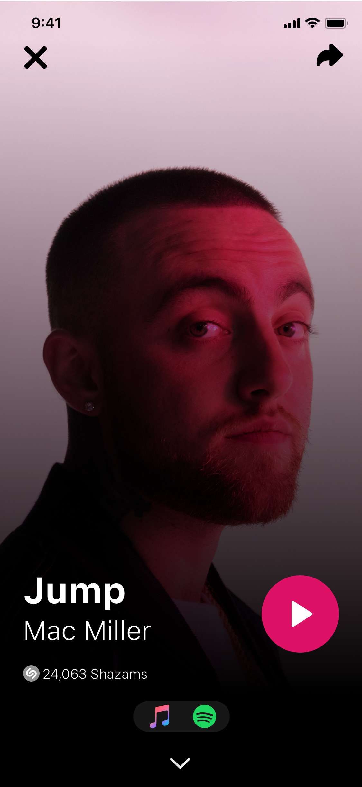
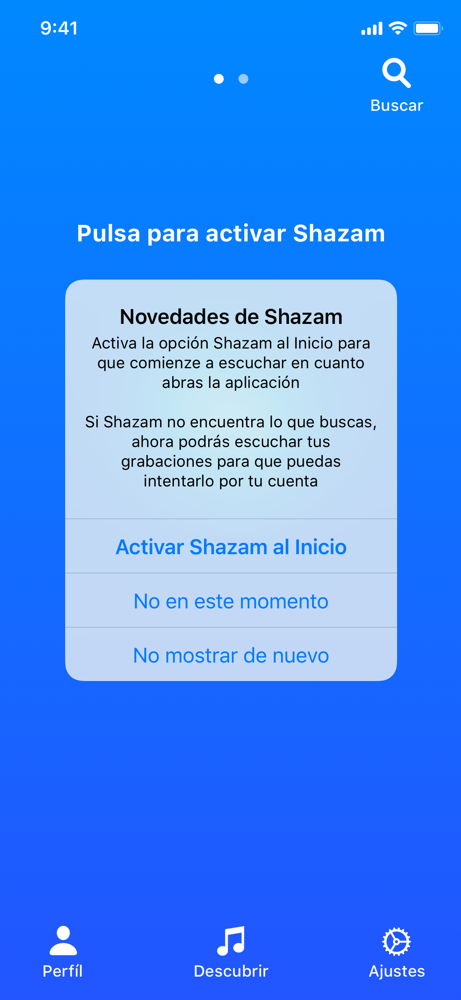

Shazam: New Feature


The following project is an UX UI Case Study focused on adding a new feature to Shazam based on possible problems that the app could have.
It's based on a complete research with Interviews, Surveys and Guerilla research, analysis and UX ideation.
It's also a full UI project developed to replicate the look of Shazam and of a new seamless feature.